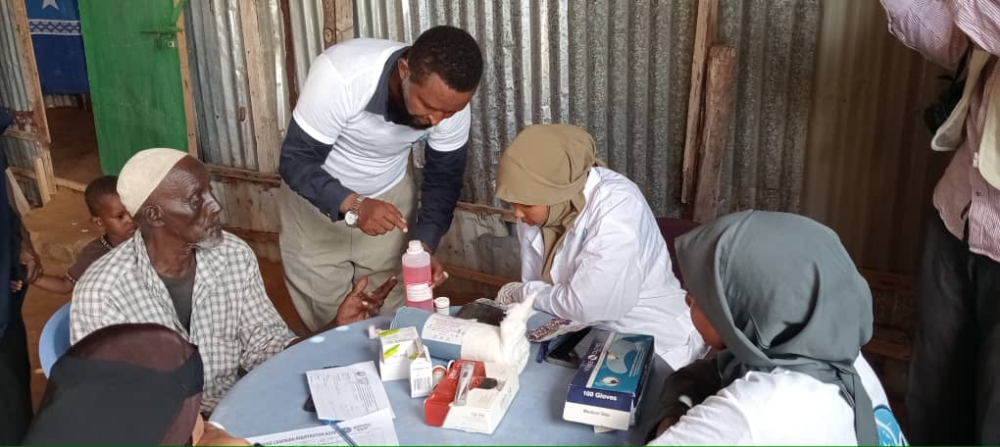

Community Outreach
Engaging communities through diabetes awareness and outreach activities.
Working toward a healthier Somalia through diabetes prevention, awareness, screening, management, research, advocacy, professional education, and community support.
The Somali Diabetes Foundation is a nonprofit organization working to improve diabetes awareness, prevention, early detection, management, research, and support for people affected by diabetes and their families.
SDF brings together community engagement, healthcare professional development, research, advocacy, and partnerships to contribute to a healthier Somalia.
Learn more about SDF →We work toward a comprehensive and sustainable approach to diabetes prevention and care.
A nonprofit platform focused on strengthening diabetes prevention, care, research, and community engagement in Somalia.
SDF works across multiple areas to contribute to stronger diabetes prevention, care, knowledge, and health systems.
Promoting knowledge about diabetes, healthy lifestyles, prevention, symptoms, and the importance of timely care.
Supporting awareness, screening, early detection, and prevention initiatives within communities.
Supporting professional education and capacity building related to diabetes prevention and management.
Promoting stronger policies, health systems, and approaches that address diabetes and related needs.
Supporting research, data generation, and evidence that can inform diabetes programs and decision-making.
Engaging people living with diabetes, families, communities, and other stakeholders.
Mobilizing resources and partnerships to support sustainable diabetes initiatives and community health programs.
Connecting awareness, prevention, care, research, advocacy, education, and community support.
SDF is committed to developing programs that contribute to better diabetes knowledge, prevention, care, healthcare capacity, research, and health-system strengthening.
Explore Our ImpactIncreasing understanding of diabetes and its prevention within communities.
Supporting screening and early identification of diabetes and related risks.
Promoting appropriate knowledge, care, adherence, and complication prevention.
Supporting education and capacity building for healthcare professionals.
Encouraging research and data-driven approaches to diabetes challenges.
Contributing to stronger policies, partnerships, and health-system responses.
SDF recognizes research and reliable data as important tools for understanding diabetes challenges and developing effective responses in Somalia.
Our research direction includes questions related to diabetes, prevention, healthcare challenges, community knowledge, and health systems.
SDF aims to connect research and practical health programs, helping evidence inform education, prevention, patient support, professional development, and advocacy.
Explore SDF Research →Explore selected activities, outreach, education, screening, partnerships, and community engagement initiatives.
Engaging communities through diabetes awareness and outreach activities.

Supporting diabetes screening and health education within community settings.

Promoting practical knowledge and education about diabetes prevention and care.
Individuals, healthcare professionals, researchers, institutions, organizations, and communities can contribute to the diabetes response in Somalia.
Contribute your time, skills, and experience to SDF activities and community initiatives.
Healthcare professionals can contribute to education, training, programs, and technical initiatives.
Collaborate on research, evidence generation, and knowledge-sharing initiatives.
Institutions and organizations can explore opportunities for collaboration and partnership.
Help bring diabetes awareness and prevention messages to families and communities.
Financial and in-kind support can help strengthen sustainable diabetes initiatives.
Your support can help strengthen diabetes awareness, prevention, screening, education, research, patient support, and community initiatives.